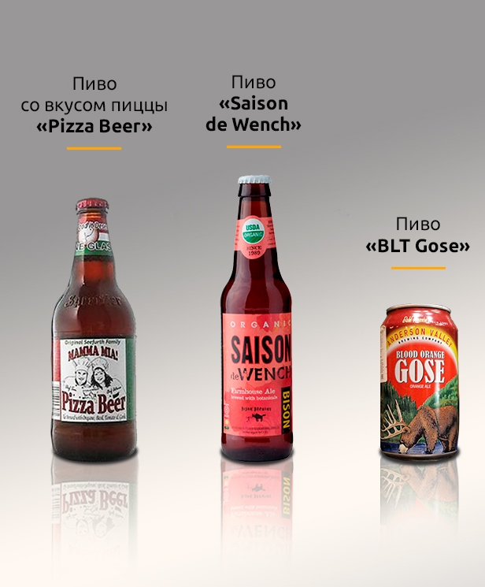
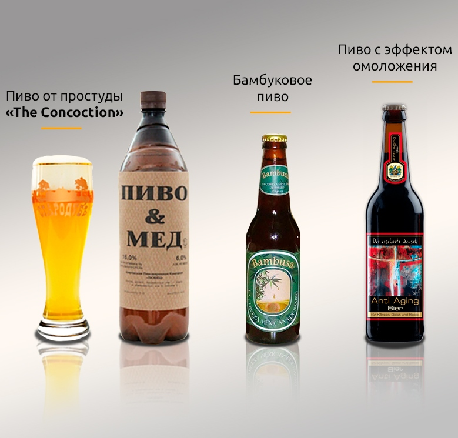
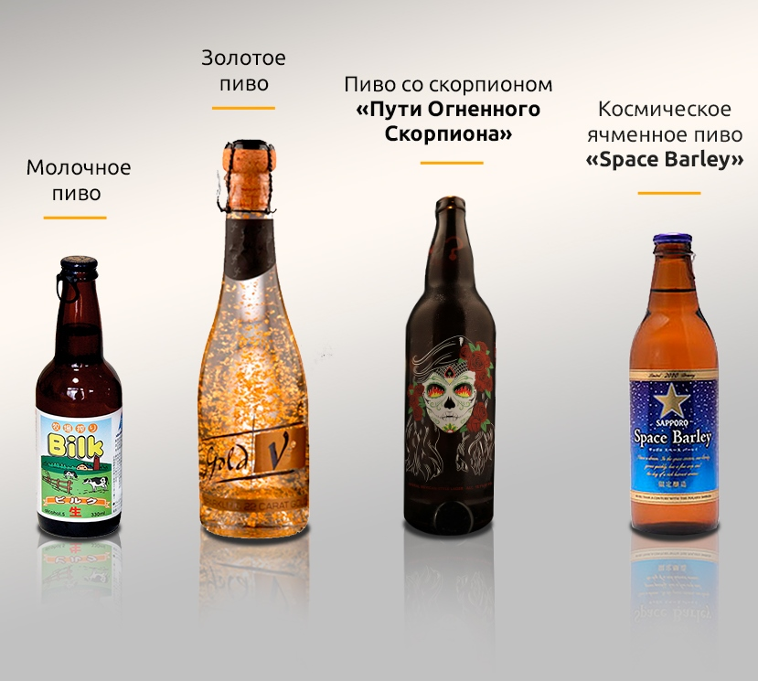

Большинство любителей пива периодически пробует новые сорта этого напитка. Однако для получения истинного удовольствия настоящим гурманам иногда необходимо что-то действительно уникальное. Специально для этих целей были придуманы сложные рецептуры, идеи создания которых принадлежат креативным пивоварам из разных стран мира. Итак, вашему вниманию представляем ряд самых необычных сортов пива, которые удивят даже изощренных гурманов.
Пиво со вкусом пиццы «Pizza Beer от Mamma Mia»
Открывает хит-парад необычных сортов напиток со вкусом пиццы, придуманный супругами Томом и Атеной Сиферт из Америки, которые занимались пивоварением в собственном гараже. Пиво было сварено с добавлением дополнительных ингредиентов, которые обычно присутствуют в пицце – помидоров, базилика, чеснока и душицы. А его создатели поймали «звезду удачи», поскольку необычный вкус их творения настолько понравился людям, что местная пивоварня подписала с ними контракт, распространив напиток по всей территории США.
Сейчас пиво со вкусом пиццы можно встретить также в некоторых странах Европы. К слову, супруги пробовали экспериментировать с вкусовыми качествами собственного напитка, добавляя в него грибы, оливки и колбасу, однако попытки не увенчались успехом, поскольку итоговый вкус не оказался приятным.
«Saison de Wench»
Следующую позицию в нашем хит-параде занимает уникальный цветочный эль. Это классическое пиво дополнено лепестками роз и гибискуса, что разбавляет горечь напитка едва уловимой сладостью цветов. Сама идея этого творения и насыщенный красный цвет особенно нравится представительницам прекрасного пола, но и многие мужчины оценят такое гармоничное сочетание брутального и нежного.
«BLT Gose»
Это, пожалуй, самое специфическое пиво в мире. Оно было приготовлено с добавлением дополнительных ингредиентов: морской соли, томатов, кориандра и листьев лимонного дерева, которые придают напитку кислый пшеничный привкус. Несмотря на оригинальность такого напитка, его вкусовые качества предназначены не для всех, а только для настоящих любителей нестандартных вкусов, ну или для тех, кто любит периодически выходить из зоны комфорта.

Наконец, сбылась мечта всех любителей лечить простудные болезни настойками с алкоголем – этот эль гармонично дополнен лимонным соком, имбирем, медом и экстрактом диких цветов. Чем не лекарство от простуды? Кстати, его способность освежать дыхание и тонизировать организм была по достоинству оценена людьми, страдающими от утреннего похмелья и собирающимися в это время на работу.
Бамбуковое зеленое пиво
Бамбуковое пиво привлекает внимание своим неповторимым ярко-изумрудным цветом, получили который путем добавления к исходному напитку листьев бамбука. Китайские пивовары собирают листья глубокой осенью, сушат их и экстрагируют. Это длительный и сложный процесс, поэтому не удивительно, что цена этого эля немаленькая. Создатели пива утверждают, что оно полезно для здоровья благодаря своей способности выводить из организма шлаки и токсины.
Пиво с эффектом омоложения
Теперь можно отправить в прошлое миф о том, что частое употребление алкоголя вызывает преждевременное появление морщин. Немцы изобрели омолаживающее пиво, в составе которого, кроме традиционных ячменя, хмеля и дрожжей, присутствуют вода из горячих минеральных источников, антиоксиданты, витамины и экстракты водорослей. Представительницы прекрасного пола используют его и как напиток, и как ароматную добавку для ванной. Создатели эля утверждают, что это также отличное профилактическое средство против раковых заболеваний.
Молочное пиво
Что будет, если смешать молоко и пиво? Кажется, что только сумасшедшему придет в голову эта идея, однако креативные японцы уже выпустили в продажу эль, в составе которого вода полностью заменена коровьим молоком. Удивительно, но вкус напитка получился очень приятным – фруктовым со сладким привкусом. Как насчет утреннего пива с молоком?
Золотое пиво
Напиток с переливающимся золотым оттенком действительно содержит частички драгоценного металла. Создатель этого шедевра – чешский пивовар Марек Пьетонь – поместил в пивную бутылку очень тонкую полоску золота и раздробил ее под напором струи пива, из-за чего оно приобрело шикарный золотистый цвет. На сегодняшний день этот сорт считается одним из самых дорогих в мире.
Пиво со скорпионом «La Jornada del Escorpion en Fuego Hacia la Casa del Chupacabra Muerto»
Пиво со скорпионами часто пугает дегустаторов своим самым неповторимым ингредиентом, однако в составе его совсем немного. В напиток традиционно варится на основе солода, в качестве дополнительных ингредиентов выступает перец и экстракт агавы, благодаря чему эль приобретает огненную остроту и ценится любителями всего брутального.
Космическое ячменное пиво «Space Barley»
Это один из самых дорогих сортов пива в мире с необычной историей. Его основой стал ячмень, выращенный в невесомости. В 2006 году учеными был проведен эксперимент, в ходе которого в космос отправили семена ячменя с целью определить, насколько хорошо злаковые чувствуют себя за пределами атмосферы. Нужно отметить, что опыт прошел невероятно успешно. Когда задача была выполнена, из выращенного ячменя приготовили один из самых необычных сортов пива в мире, который, тем не менее, вряд ли придется по карману среднестатистическому любителю оригинальных вкусов.